STEP 07: 데이터 시각화 part4#
이번 실습에서는 종목 세부 분석 페이지를 구축해보겠습니다.
7.1 분산형 차트 추가하기#
붙여넣기(Ctrl + V)를 실행하여 앞서 복사해온 카드 시각적 개체를 추가합니다. 그리고
필드에 있는텍스트_메달 세부 분석필드를 제거합니다. 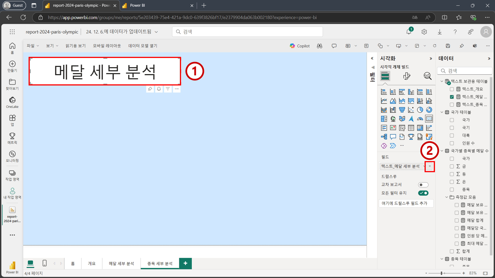텍스트_종목 세부 분석필드를 카드 시각적 개체에 추가합니다. 그리고 비어 있는 캔버스를 한번 클릭한 후 아래 이미지의 3번을 참고하여 분산형 차트를 추가합니다. 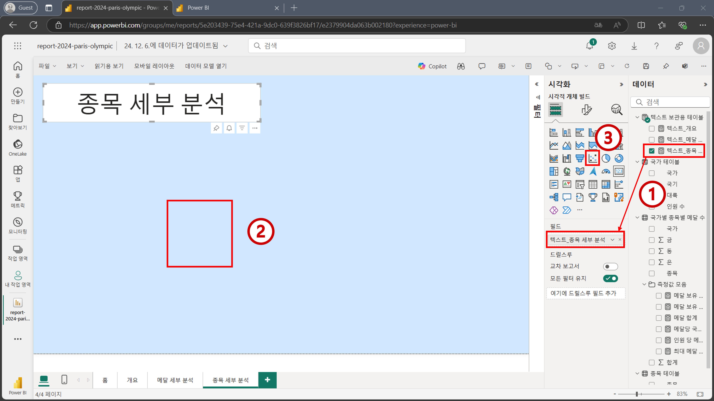아래 이미지를 참고하여 적절한 필드들을 분산형 차트의 적절한 위치에 추가합니다. 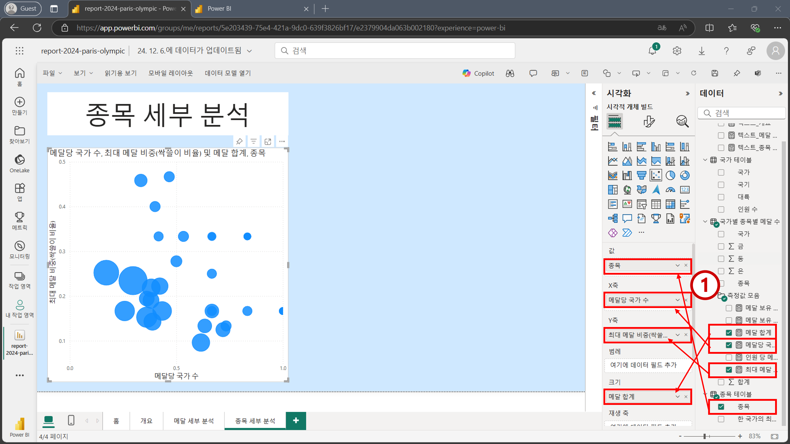
아래 이미지를 참고하여
범주 레이블을 활성화 합니다. 그리고 분산형 차트에 있는 거품 위에 마우스를 올려보면최대 메달 비중(싹쓸이 비율)값이 소수점으로 나오고 있습니다. 백분율로 만들어 주기 위해 데이터 모델링 탭으로 다시 이동합니다. 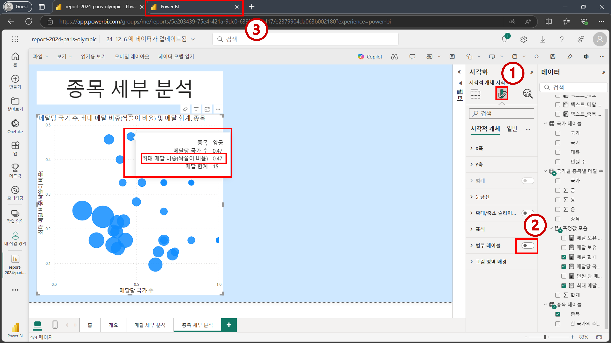최대 메달 비중(싹쓸이 비율)필드를 클릭한 후백분율 형식을 활성화 합니다. 그리고 다시 보고서 편집 화면으로 돌아갑니다. 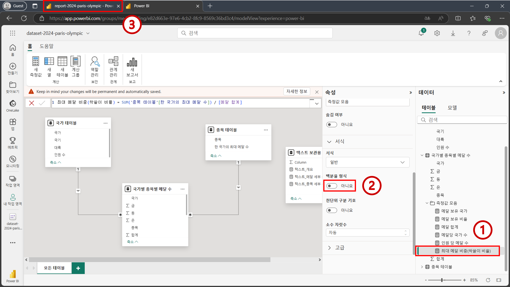최대 메달 비중(싹쓸이 비율)값이 백분율 형태로 나오는 것을 확인합니다. 그리고 비어 있는 캔버스를 한번 눌러주고 아래 이미지의 2번을 참고하여누적 세로 막대형 차트를 추가합니다. 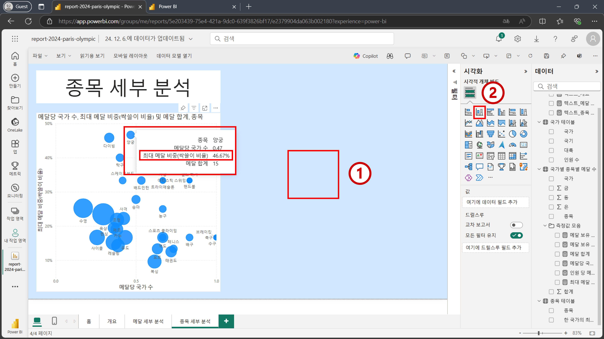
7.2 누적 세로 막대형 차트 추가하기#
아래 이미지를 참고하여 적절한 필드들을
누적 세로 막대형 차트에 추가합니다. 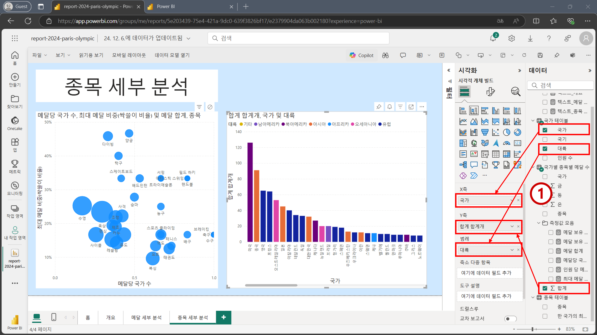분산형 차트에 있는 거품 중 한 개를 클릭합니다. Power BI 특성 상 시각적 개체간 상호작용이 기본으로 활성화 되어 있기 때문에 막대 그래프에도 필터링이 적용되어 ‘양궁’ 종목에 해당하는 메달 데이터만 강조 표시 되는 것을 확인할 수 있습니다. 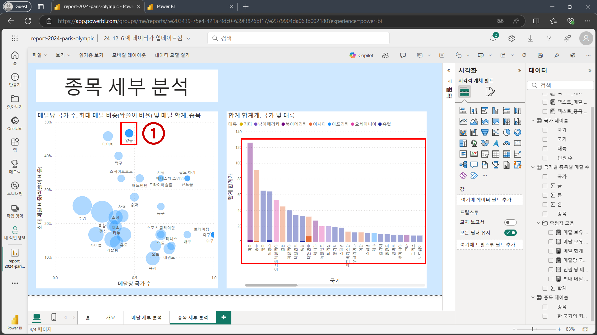
좀 더 접근성 좋게 하기 위해 강조 표시 되신 필터링이 되도록 변경해보겠습니다. 분산형 차트를 클릭한 후 아래 이미지를 참고하여
상호 작용 편집기능을 활성화 합니다. 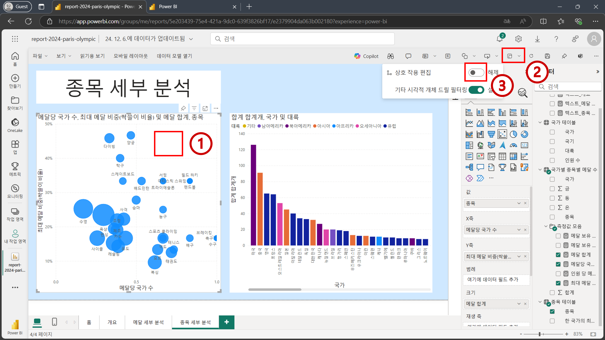활성화가 된 후 막대형 차트 위에 아이콘들이 표시되는 것을 확인할 수 있습니다. 아래 이미지를 참고하여 적절한 아이콘을 클릭한 후 분산형 차트 상의 거품을 다시 한 번 눌러줍니다. 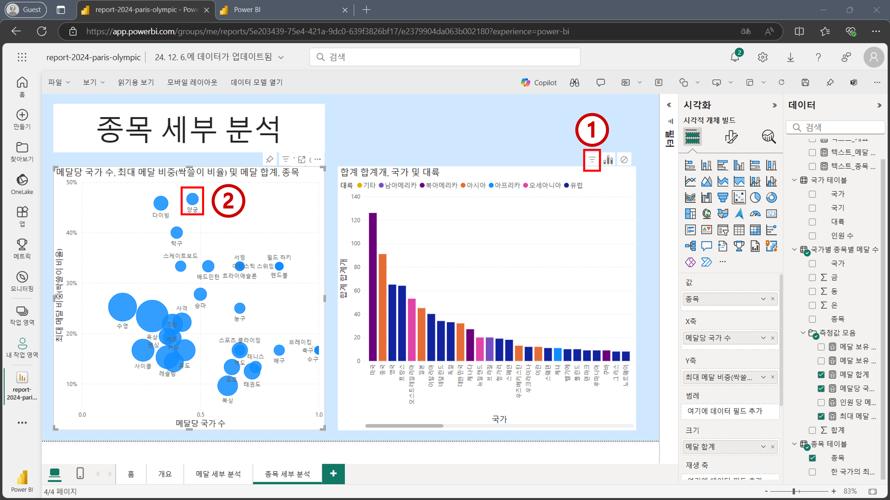
이제는 강조 표시가 아니라 필터링이 되어서 특정 종목에서 메달을 수상한 국가들만 시각화 된 것을 볼 수 있습니다. 상호 작용 편집 기능은 더 이상 필요 없기 때문에 아래 이미지를 참고하여 비활성화 하겠습니다. 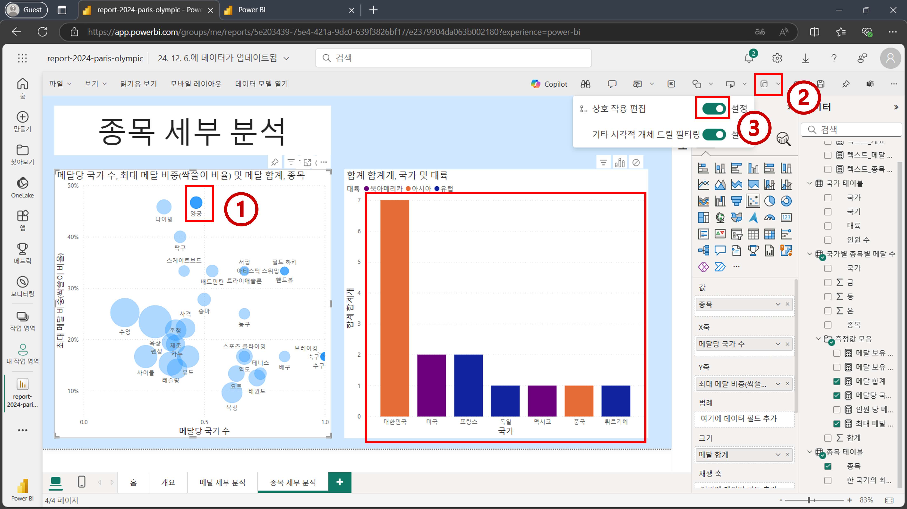
Tip
비활성화 하지 않으면 시각적 개체 우측 상단에 아이콘이 계속 나타나므로, 작업 중 불편할 수 있습니다.
막대 그래프 상에 있는 막대 위에 마우스를 올려 보면
합계 합계개부분을 통해 특정 국가가 특정 종목에 대해 획득한 메달 개수를 확인할 수 있습니다. 해당 부분을 백분율로 보기 위해선 아래 이미지를 참고하여총합계의 백분율을 선택합니다. 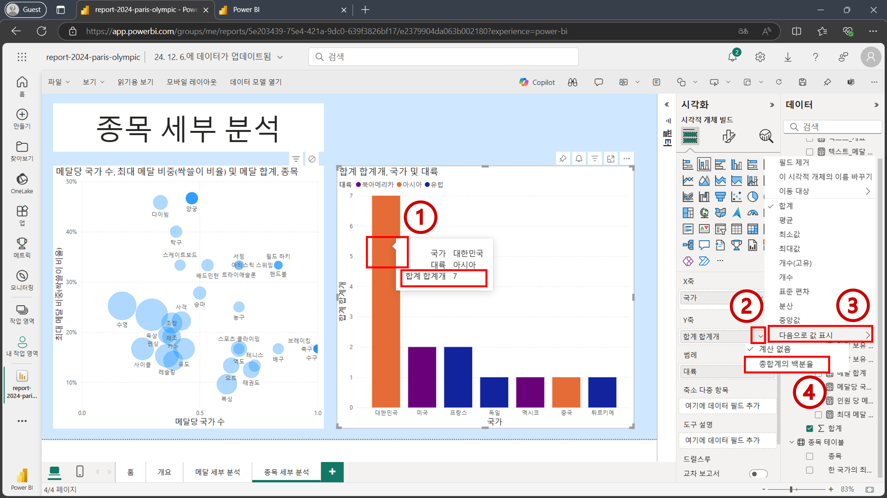백분율로 나타나는 것을 아래 이미지를 통해 확인할 수 있습니다. 백분율과 이전에 나왔던 메달 개수를 함께 표시하고자 한다면 아래 이미지를 참고하여
'국가별 종목별 메달 수'[합계]필드를도구 설명에 추가합니다. 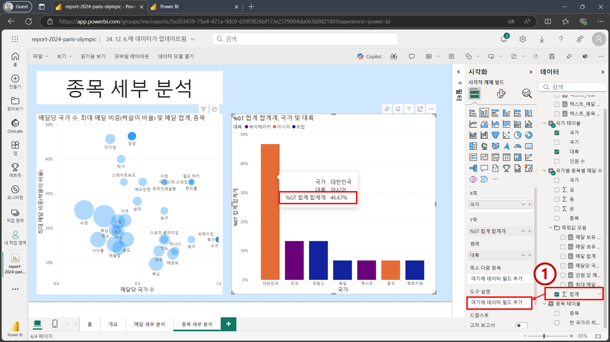백분율과 메달 개수가 함께 막대 그래프 상에 나오는 것을 확인할 수 있습니다. 이제 아래 이미지를 참고하여 그래프들의 제목을 수정하겠습니다. 분산형 차트는
종목별 메달당 국가 수 및 싹쓸이 비율로 편집하고 막대 그래프는국가별 메달 비중으로 편집합니다. 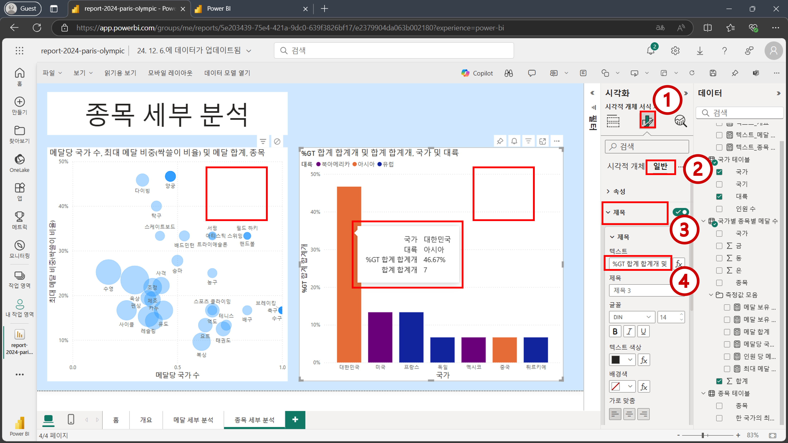홈버튼을 클릭해서홈페이지로 이동합니다. 그리고 나서 아래 이미지를 참고하여 우측 상단에 저장 버튼을 눌러 줍니다. 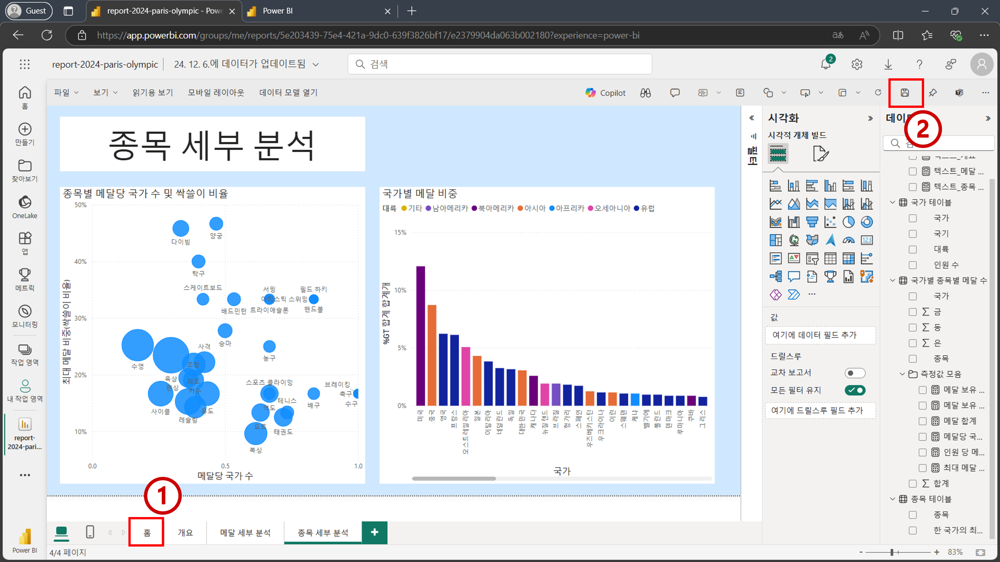
Tip
저장 버튼을 눌렀을 때 위치하고 있던 페이지가 랜딩 페이지로 설정 됩니다.
저장이 완료되면 좌측 상단의
읽기용 보기를 누릅니다. 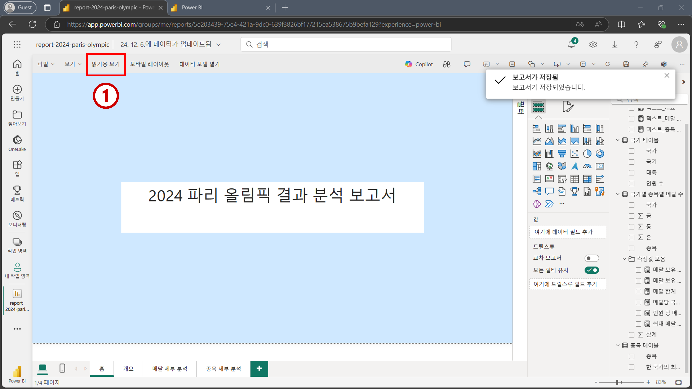편집화면에서 빠져 나왔습니다. 현재 화면은 회사 내에서 해당 보고서를 공유할 때 공유 받은 사람이 보게 되는 화면과 같습니다. 좌측
페이지메뉴를 탐색하여 구축한 보고서를 맘껏 탐색해 보세요! 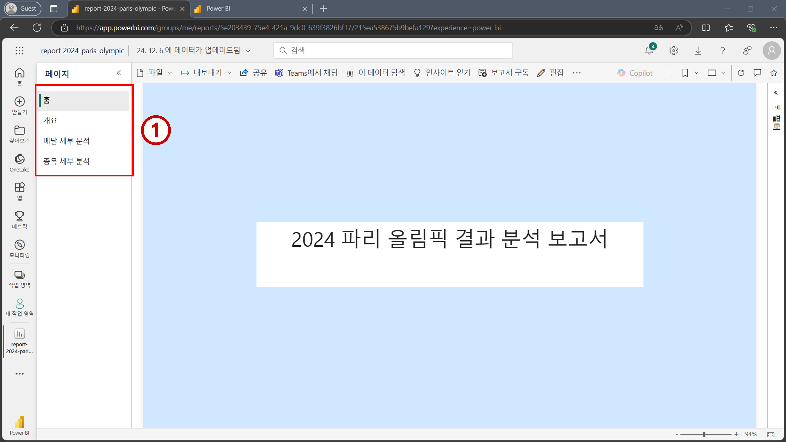
축하합니다! 워크샵을 모두 완료하셨습니다.